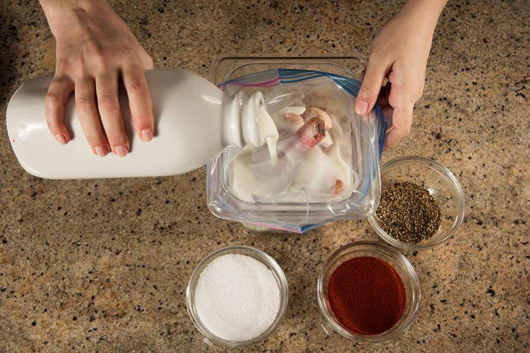
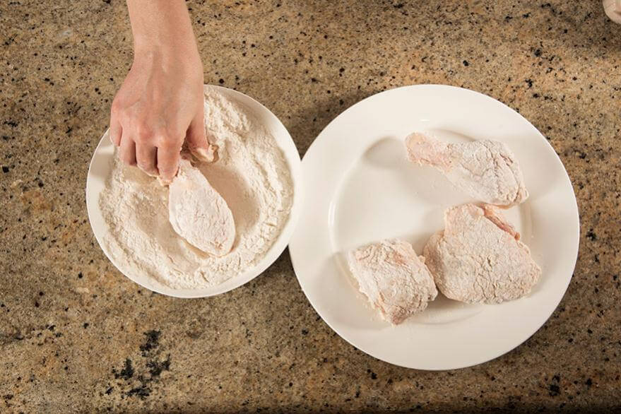
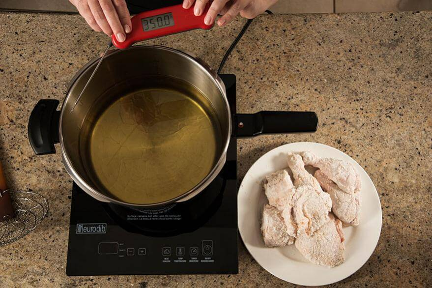
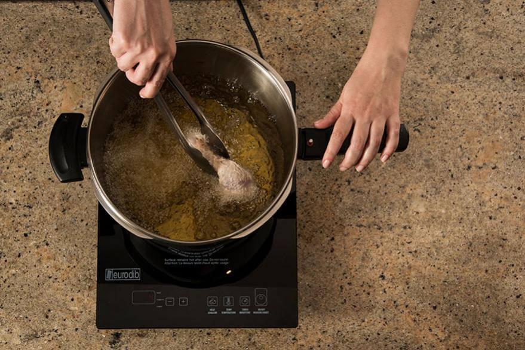

Step 1: Brine and marinate the chicken:-

In a sealable food container or Ziploc bag, combine enough buttermilk to cover the chicken, about 4 cups,
with your choice of seasoning. Place the chicken pieces in the marinade, seal, and let sit for at least 30
minutes. The longer the chicken marinates, the more flavourful it will be.
Note: Not sure what seasoning to use? Try a mix of cayenne, paprika, garlic powder, salt, and black pepper.
Step 2: Dredge the chicken:-

Place your seasoned starch of choice in a large, shallow bowl. Dip your marinated chicken pieces into the dredging mixture.
If you’re feeling adventurous, dip your dredged chicken back into your leftover marinade, then again into the dredging mixture. Double-dredged
chicken fries up nice and crispy.
Note: If you like your crust crispy and rugged, we recommend incorporating two tablespoons of marinade per one cup of starch into the dredging mixture. This added moisture will give dimension to your crust.
Step 3: Heat the oil:-
In a Dutch oven, skillet, or thick-walled stock pot, heat your oil to 350°F. Be sure to use an oil that can withstand high temperatures without smoking or burning. Peanut and canola oil are common choices.
Step 4: Fry the chicken:-
Once the oil is heated, lower in your dredged chicken pieces one by one. Try to work in small batches – crowded chicken doesn’t brown as evenly. Let the chicken fry until the bottoms are crisp and brown, then flip. Once the chicken is golden brown and cooked through, remove from the pan and place on a paper towel or paper bag to absorb any excess oil. Finally, place on a wire rack to cool and dry.